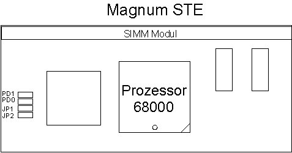

Previous
Next
TOC
Die MagnumSTE sitzt richtig im Rechner wenn das Speichermodul vor dem
Netzteil steht.

Zur Softwareinstallation muß das Treiberprogramm MAGNUM.PRG in den
Autoordner kopiert werden. Das Treiberprogramm sollte möglichst zuerst
ausgeführt werden, damit die Speicheranforderungen der nachfolgenden
Programme aus dem Fast-RAM bedient werden können. Wenn Sie die Magnum-
karte mit einem 8MB SIMM Modul und dem Jumper JP1 benutzen, sollten
Sie das Programm HIMEM.PRG als erstes Programm in den Autoordner
kopieren und das Magnum Treiberprogramm als letztes. Somit werden die
Anforderungen der Autoordnerprogramme, die zwischen den beiden Trei-
berprogrammen gestartet aus den beiden 512KB großen Upper Memory
Blöcken (UMBs) bedient und das restliche Fast-RAM steht als ein großer
Block zur Verfügung.
Kapitel Die MagnumSTE Karte für alle MegaSTE Computer, Seite 2